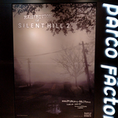

Miscellaneous
This page covers various other things.

External Sites
-

Review of the "EXHIBITION OF SILENT HILL 2"
An event report on SH2 held in Tokyo — July 25, 2026
Japanese
このサイトについての日本語での説明と意図。
This is an unofficial fan archive primarily focused on Silent Hill 4
This page covers various other things.

Review of the "EXHIBITION OF SILENT HILL 2"このサイトについての日本語での説明と意図。